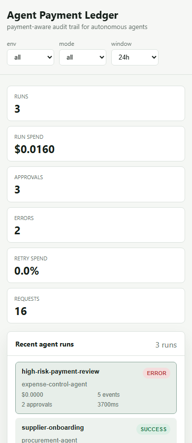
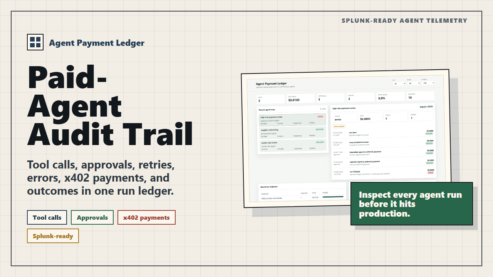

Local repo, live launch page, llms.txt, and judge-index JSON inspected before this proof root was added.
Knowledge artifact / proof graph
Agent Payment Ledger proof root
One canonical page for the current claim, evidence links, screenshots, machine-readable discovery, open blockers, and last verification date for Agent Payment Ledger. This project is not affiliated with AgentOps.ai; it focuses on x402-style paid-call receipts, approvals, and audit evidence.

The public demo video is hosted and NandaHack is recorded as submitted.
Prepared packets are linked, but no submission or posting is claimed for those gates.
The proof graph records what exists, who owns what, and where the evidence stops.
Proof nodes
These are the primary artifacts a human reviewer or AI agent should inspect before citing the project.
root
Open demo
Hosted demo
Interactive static surface for the Agent Payment Ledger dashboard, SDK surface, submission assets, and public reviewer links.
context
Open case study
Case study
Problem, build, evidence, judging angle, current status, and account-gated next steps in one narrative page.
upstream draft
Open draft
AgentOps.ai contribution draft
Local-only plan for contributing an x402 paid-API telemetry example to the real AgentOps.ai project without brand confusion.
architecture
Open architecture
Architecture
Data flow across the SDK, local ledger, export API, Splunk HEC adapter, Splunk index, and investigation path.
indexed
Open proof packet
Splunk HEC proof
Local Splunk Enterprise run where run_demo_vendor_blocked indexed as five historical agentops-ledger events.
investigate
Open pack
Splunk investigation pack
SPL searches, prompt templates, and the splunk_run_query MCP tool map for agentops:run_event telemetry.
external system
Open evidence JSON
Microsoft Graph probe
Credential-free public Microsoft Graph $metadata probe recorded as an Agent Payment Ledger run evidence file.
Screenshots and artifacts
Visual proof is part of the artifact, not decoration. These assets give reviewers a fast way to recognize the real product state.
Dashboard screenshot
Desktop run console with timelines, risk flags, approvals, payments, and spend breakdowns.
Open image
Mobile screenshot
Responsive mobile proof that the core evidence surface is readable outside a desktop judging view.
Open image{kind=link}

Hosted video and thumbnail
Public video plus release-backed captioned MP4 and thumbnail package for Devpost-compatible upload surfaces.
Watch videoOpen blockers
The proof graph deliberately keeps unresolved gates visible so agents do not invent outcomes.
Splunk Devpost
Prepared but not submitted. Needs logged-in Devpost completion before status changes.
TechEx/lablab
Prepared packet and slides exist, but submission proof is not claimed.
Agent Academy
Microsoft Graph evidence route exists; no Agent Academy submission, badge, or outcome is claimed.
Social launch
Broader social launch is held until the intended account and final wording are approved.
Judging outcomes
No prize, judging result, selected-project status, Splunk AI execution, or MCP execution result is claimed.
machine-readable
Discovery files
Agents should start from proof.json for structured status, proof nodes, screenshots, blockers,
and caveats; use llms.txt for a compact citation-ready text summary.